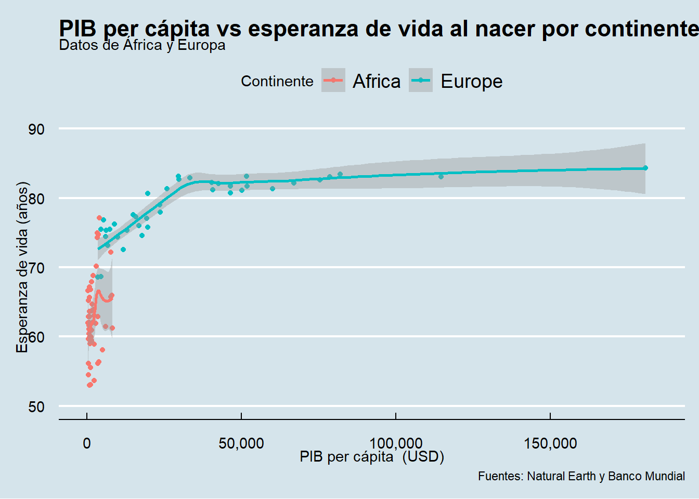
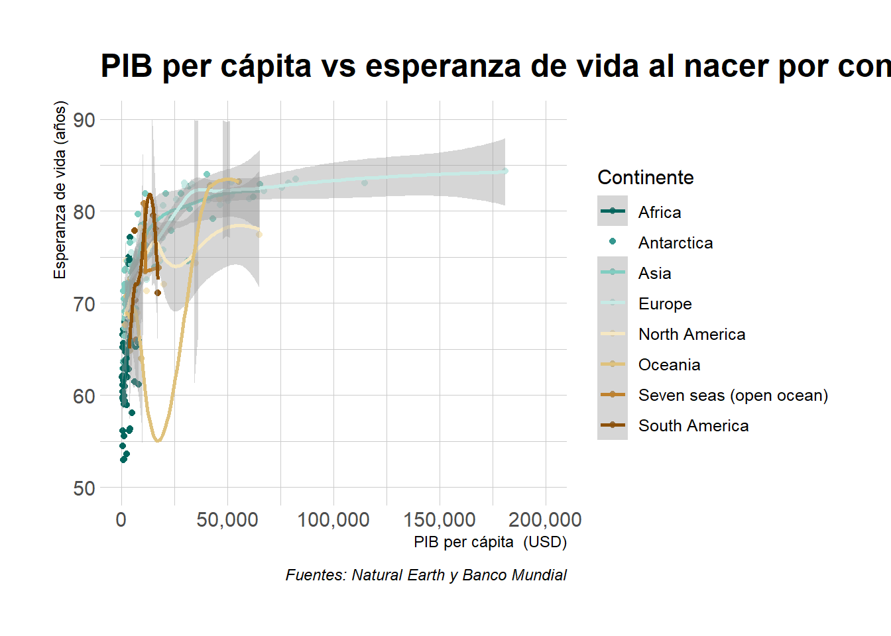
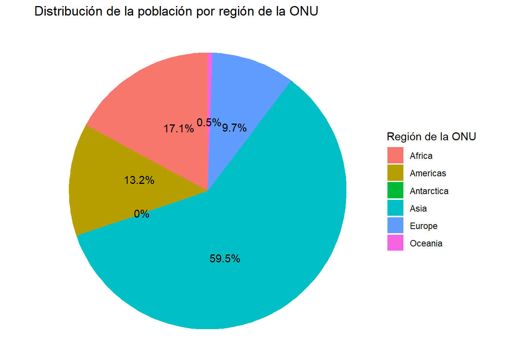

library(tidyverse)
library(plotly)
library(ggplot2)
library(DT)
library(scales)
library(palmerpenguins)
library(ggthemes)
library(hrbrthemes)09_clase_ggplot2-plotly
carga de bibliotecas
Ejercicio 1: Tablas con Tidyverse
1.1 Carga de los datos de países
# Carga de los datos de países
paises <-
read_csv("https://raw.githubusercontent.com/pf0953-programacionr/2024-ii/refs/heads/main/datos/natural-earth/paises-join-esperanzavida.csv"
)1.2 Tabla con datos de los países
# Tabla de datos de paises
paises |>
filter(SUBREGION == "Eastern Europe" & POP_EST >= 10000000) |>
select(ADM0_ISO, NAME, POP_EST) |>
arrange(desc(POP_EST)) |>
datatable(
options = list(
pageLength = 5,
language = list(url = '//cdn.datatables.net/plug-ins/1.10.11/i18n/Spanish.json')
)
)Ejercicio 2: gráficos con ggplot2
2.1 Gráfico de dispersión
# Gráfico de dispersión de PIB per cápita vs esperanza de vida al nacer
paises |>
ggplot(aes(x = GDP_PC, y = LIFE_EXPECTANCY)) +
geom_point() +
scale_x_continuous(labels = comma, limits = c(0, NA))
2.2 Gráfico de dispersión con color
# Gráfico de dispersión de PIB per cápita vs esperanza de vida al nacer
paises |>
ggplot(aes(x = GDP_PC, y = LIFE_EXPECTANCY, color = REGION_UN)) +
geom_point() +
scale_x_continuous(labels = comma, limits = c(0, NA))2.2 Gráfico de dispersión con color
# Tabla de datos de paises
paises |>
# select(ADM0_ISO, NAME, POP_EST) |>
arrange(desc(GDP_PC)) |>
select(ADM0_ISO, NAME, GDP_PC, LIFE_EXPECTANCY) |>
datatable(
options = list(
pageLength = 5,
language = list(url = '//cdn.datatables.net/plug-ins/1.10.11/i18n/Spanish.json')
)
)2.3 Gráfico de dispersión con formas
# Gráfico de dispersión de PIB per cápita vs esperanza de vida al nacer
# con formas de puntos correspondientes al continente
paises |>
ggplot(aes(x = GDP_PC, y = LIFE_EXPECTANCY, shape = REGION_UN)) +
geom_point() +
scale_x_continuous(labels = comma, limits = c(0, NA))2.4 Gráfico de dispersión con formas y color
# Gráfico de dispersión de PIB per cápita vs esperanza de vida al nacer
# con formas y colores correspondientes al continente
paises |>
ggplot(aes(x = GDP_PC, y = LIFE_EXPECTANCY, shape = REGION_UN, color = REGION_UN)) +
geom_point() +
scale_x_continuous(labels = comma, limits = c(0, NA)) +
scale_shape_manual(values = c(0, 1, 2, 3, 4, 5, 6, 7)) +
scale_color_manual(values = c("red", "blue", "green", "purple", "orange", "brown", "pink", "yellow"))
2.5 Gráfico de dispersión con formas, color y tamaño
# Gráfico de dispersión de PIB per cápita vs esperanza de vida al nacer
# con tamaño de puntos correspondiente a la población
paises |>
ggplot(aes(x = GDP_PC, y = LIFE_EXPECTANCY, size = POP_EST, color = CONTINENT)) +
geom_point() +
scale_size_continuous(labels = comma) +
scale_x_continuous(labels = comma, limits = c(0, NA))
2.6 Gráfico de dispersión con formas, color y curva de tendencia
# Gráfico de dispersión de PIB per cápita vs esperanza de vida al nacer
# + curva de tendencia
paises |>
ggplot(aes(x = GDP_PC, y = LIFE_EXPECTANCY)) +
geom_point() +
geom_smooth(method = 'lm') +
scale_x_continuous(labels = comma, limits = c(0, NA))
2.7 Gráfico de dispersión con formas, color y curva de tendencia - África y Europa
# Gráfico de dispersión de PIB per cápita vs esperanza de vida al nacer
# en África y Europa coloreado por continente
# + curva de tendencia
paises |>
filter(CONTINENT == 'Africa' | CONTINENT == 'Europe') |>
ggplot(aes(x = GDP_PC, y = LIFE_EXPECTANCY, color = CONTINENT)) +
geom_point() +
geom_smooth() +
scale_x_continuous(labels = comma, limits = c(0, NA)) +
scale_y_continuous(labels = comma, limits = c(50, 90))
Palmer penguins
Ejercicio 3: palmerpenguins
penguins |>
ggplot(aes(x = body_mass_g, y = bill_length_mm, color = species)) +
geom_point()
Facets
Ejercicio 4: Gráfico por continente
# Gráfico de dispersión de PIB per cápita vs esperanza de vida al nacer
# + paneles por continente
paises |>
ggplot(aes(x = GDP_PC, y = LIFE_EXPECTANCY)) +
geom_point() +
facet_wrap(~ CONTINENT, nrow = 2) +
scale_x_continuous(labels = comma, limits = c(0, NA))
Ejercicio 5: Paneles (Facets)
# Gráfico de dispersión de PIB per cápita vs esperanza de vida al nacer
# + paneles por continente
paises |>
ggplot(aes(x = GDP_PC, y = LIFE_EXPECTANCY)) +
geom_point() +
facet_wrap(~ CONTINENT, nrow = 2) +
scale_x_continuous(labels = comma, limits = c(0, NA))
Ejercicio 6: Paneles con dos variables (facet_grid)
# Gráfico de dispersión de PIB per cápita vs esperanza de vida al nacer
# + paneles por región y subregión de la ONU
paises |>
ggplot(aes(x = GDP_PC, y = LIFE_EXPECTANCY)) +
geom_point() +
facet_grid(REGION_UN ~ INCOME_GRP) +
scale_x_continuous(labels = comma, limits = c(0, NA))
Elementos de gráficos
Títulos, subtítulos y etiquetas
# Gráfico de dispersión de PIB per cápita vs esperanza de vida al nacer
# en África y Europa coloreado por continente
# + curva de tendencia
paises |>
filter(CONTINENT == 'Africa' | CONTINENT == 'Europe') |>
ggplot(aes(x = GDP_PC, y = LIFE_EXPECTANCY, color = CONTINENT)) +
geom_point() +
geom_smooth() +
scale_x_continuous(labels = comma, limits = c(0, NA)) +
scale_y_continuous(labels = comma, limits = c(50, 90)) +
ggtitle("PIB per cápita vs esperanza de vida al nacer por continente") +
xlab("PIB per cápita (USD)") +
ylab("Esperanza de vida (años)") +
labs(subtitle = "Datos de África y Europa",
caption = "Fuentes: Natural Earth y Banco Mundial",
color = "Continente")
Estilos (theme)
# Gráfico de dispersión de PIB per cápita vs esperanza de vida al nacer
# en África y Europa coloreado por continente
# + curva de tendencia
paises |>
filter(CONTINENT == 'Africa' | CONTINENT == 'Europe') |>
ggplot(aes(x = GDP_PC, y = LIFE_EXPECTANCY, color = CONTINENT)) +
geom_point() +
geom_smooth() +
scale_x_continuous(labels = comma, limits = c(0, NA)) +
scale_y_continuous(labels = comma, limits = c(50, 90)) +
ggtitle("PIB per cápita vs esperanza de vida al nacer por continente") +
xlab("PIB per cápita (USD)") +
ylab("Esperanza de vida (años)") +
labs(subtitle = "Datos de África y Europa",
caption = "Fuentes: Natural Earth y Banco Mundial",
color = "Continente") +
theme_economist() # tema de ggplot2
Colores
# Gráfico de dispersión de PIB per cápita vs esperanza de vida al nacer
# coloreado por continente
paises |>
ggplot(aes(x = GDP_PC, y = LIFE_EXPECTANCY, color = CONTINENT)) +
geom_point() +
geom_smooth() +
scale_x_continuous(labels = comma, limits = c(0, NA)) +
scale_y_continuous(labels = comma, limits = c(50, 90)) +
ggtitle("PIB per cápita vs esperanza de vida al nacer por continente") +
xlab("PIB per cápita (USD)") +
ylab("Esperanza de vida (años)") +
labs(caption = "Fuentes: Natural Earth y Banco Mundial",
color = "Continente") +
scale_colour_brewer(palette = "BrBG", direction = -1) +
theme_ipsum() # estilo de hrbrthemes
Plotly
Gráfico interactivo
# Gráfico de dispersión de PIB per cápita vs esperanza de vida al nacer
grafico_ggplot2 <-
paises |>
ggplot(aes(x = GDP_PC, y = LIFE_EXPECTANCY, color = CONTINENT)) +
geom_point(aes(
# datos que se muestran al colocar el ratón sobre un punto
text = paste0(
"País: ", NAME, "\n",
"PIB per cápita: ", GDP_PC, "\n",
"Esperanza de vida: ", LIFE_EXPECTANCY
)
)) +
scale_x_continuous(labels = comma, limits = c(0, NA)) +
scale_y_continuous(labels = comma, limits = c(50, 90)) +
ggtitle("PIB per cápita vs esperanza de vida al nacer por continente") +
xlab("PIB per cápita (USD)") +
ylab("Esperanza de vida (años)") +
labs(caption = "Fuentes: Natural Earth y Banco Mundial",
color = "Continente") +
labs(color = "Población estimada") +
theme_ipsum() # estilo de hrbrthemes
# Gráfico plotly
ggplotly(grafico_ggplot2, tooltip = "text") |>
config(locale = 'es') # para mostrar los controles en españolOtros tipos de gráficos
Histogramas
# Histograma ggplot2 de distribución del PIB per cápita
histograma_ggplot2 <-
paises |>
ggplot(aes(x = GDP_PC)) +
geom_histogram(
aes(
text = paste0(
"PIB per cápita (valor medio del rango): $", round(after_stat(x), 2), "\n",
"Frecuencia: ", after_stat(count)
)
),
bins = 8
) +
scale_x_continuous(labels = comma, limits = c(0, NA)) +
coord_cartesian(ylim = c(0, 40)) +
ggtitle("Distribución del PIB per cápita") +
xlab("PIB per cápita ($ EE.UU.)") +
ylab("Frecuencia") +
labs(subtitle = "Datos de 201 países", caption = "Fuentes: Natural Earth y Banco Mundial") +
theme_economist()
# Histograma plotly
ggplotly(histograma_ggplot2, tooltip = "text") |>
config(locale = 'es')Gráficos de Pastel
# Agrupar y resumir los datos
suma_poblacion_por_region <- paises |>
group_by(REGION_UN) |>
summarise(POP_TOTAL = sum(POP_EST))
# Calcular porcentajes
porcentaje_poblacion_por_region <- suma_poblacion_por_region |>
mutate(POP_PCT = round(POP_TOTAL / sum(POP_TOTAL) * 100, 1))
# Gráfico de pastel
grafico_pastel_ggplot2 <-
porcentaje_poblacion_por_region |>
ggplot(aes(x = "", y = POP_TOTAL, fill = REGION_UN)) +
geom_bar(width = 1, stat = "identity") +
coord_polar(theta = "y") +
geom_text(
aes(label = paste0(POP_PCT, "%")),
position = position_stack(vjust = 0.6) # para ajustar la posición del texto en cada porción
) +
labs(title = "Distribución de la población por región de la ONU",
x = NULL,
y = NULL,
fill = "Región de la ONU") +
theme_void()
# Despliegue del gráfico
grafico_pastel_ggplot2
Gráfico de Barras
Con transformaciones estadísticas
# Gráfico de barras con conteo de países por región de la ONU
grafico_barras_ggplot2 <-
paises |>
ggplot(aes(x = fct_infreq(REGION_UN))) +
geom_bar(
aes(
text = paste0(
"Cantidad de países: ", after_stat(count)
)
)
) +
ggtitle("Cantidad de países por región de la ONU") +
xlab("Región de la ONU") +
ylab("Cantidad de países") +
labs(caption = "Fuente: Natural Earth") +
theme_economist()
# Gráfico de barras plotly
ggplotly(grafico_barras_ggplot2, tooltip = "text") |>
config(locale = 'es')Sin transformaciones estadísticas
# Gráfico de barras con población de países
# de América
grafico_barras_ggplot2 <-
paises |>
filter(REGION_UN == "Americas") |>
ggplot(aes(x = reorder(ADM0_ISO, POP_EST), y = POP_EST/1000000)) +
geom_col(
aes(
text = paste0(
"País: ", NAME, "\n",
"Población (millones de habitantes): ", round(POP_EST/1000000, 2)
)
)
) +
scale_y_discrete(expand = expansion(mult = c(0.2, 0.2))) + # agrega un 20% de espacio al inicio y al final del eje y
coord_flip() + # para mostrar barras horizontales
ggtitle("Población de países de América") +
xlab("País") +
ylab("Población (millones de habitantes)") +
labs(caption = "Fuente: Natural Earth") +
theme_economist()
# Gráfico de barras plotly
ggplotly(grafico_barras_ggplot2, tooltip = "text") |>
config(locale = 'es')Gráfico de barras apiladas
# Gráfico de barras apiladas por región de la ONU y nivel de economía
grafico_barras_ggplot2 <-
paises |>
ggplot(aes(x = REGION_UN, fill = ECONOMY)) +
geom_bar() +
ggtitle("Proporción de niveles de economía en regiones de la ONU") +
xlab("Región de la ONU") +
ylab("Proporción") +
labs(fill = "Nivel de economía") +
theme_minimal()
# Gráfico de barras plotly
ggplotly(grafico_barras_ggplot2) |>
config(locale = 'es')